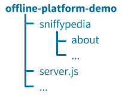

Install an offline demo
Enjoy our full open source platform without Internet connectivity
Install Node.js
Do you have Node.js installed?
Yes No UnsureYou're all set!
Proceed to install the code
Install Node.js
Installation is easy on all platforms
Click the button below to access the Node.js downloads page and then select the LTS version (recommended).
Verify if you have Node.js installed
Open a terminal or command prompt, type node --version and press Enter.

If the output is something like vx.x.x, you do indeed have Node.js installed and can click Yes above. Otherwise click No above.
Install the code
Do you have git installed?
Yes No Unsure Let's install with git
Should be quick and painless
From the command line, browse to the folder in which you'd like the code to reside, then run:
git clone --recursive https://github.com/reelyactive/offline-platform-demo
cd offline-platform-demo
npm install
All the code and dependencies are now installed.
Let's install the old-fashioned way
A few extra steps, but straightforward nonetheless
Click the button below to download the master.zip archive from the offline-platform-demo repository on the reelyActive GitHub.
Unzip the file to a local folder where you'd like the code to reside. We'll assume the folder name will be offline-platform-demo.
Click the button below to download the gh-pages.zip archive from the sniffypedia repository on the reelyActive GitHub.
Unzip the contents of the archive to the offline-platform-demo/sniffypedia folder. Your folder hierarchy should look like:
 Open a terminal or command prompt, browse to the offline-platform-demo folder, type npm install and press Enter.
All the code and dependencies are now installed.
Verify if you have git installed
Open a terminal or command prompt, type git --version and press Enter.
If the output is something like git version x.x.x, you do indeed have git installed and can click Yes above. Otherwise click No above.
Run the demo
Do you have a starter kit connected to your computer?
Yes Unsure Let's fire up the server
One final command to go!
Open a terminal or command prompt, browse to the offline-platform-demo folder, type node server and press Enter.
The platform is now running, and the console output will encourage you to browse to localhost:3001 where you can access the demos and APIs through the following interface:

If you see bubbles in the bubblescape, the installation was successful. The content of the bubbles is being sourced from your local sniffypedia instance!
Connect a starter kit
Be sure to stick it in the right hole!
Plug the reelceiver into the hub so that the Hub → arrow points towards the hub. Note that the reelceiver will still power on if it's connected in the wrong orientation, but it will not communicate with the hub. Watch the video for details.
Hears Here's what you can demo
Access any of these webpages locally — even offline
Dashboard
Infrastructure APIs
Contextual APIs
The bubblescape
Prefer Software-as-a-Service?

Our Pareto platform combines even more features and functionality with the convenience of SaaS for those times when you are online.
What's next?
If the bubblescape, sensorscape and graphical APIs aren't enough for your demo, you can easily build your own custom demo by following our Build web apps with beaver.js tutorial.